What can your coded texts represent?
Twitter’s public API made one platform unusually visible to researchers.
One bibliometric study identified 27,453 studies using Twitter data from 2006–2023, across 14 disciplines.
Data availability helped determine which part of social life became heavily studied.
Source: Murtfeldt et al. (2024), preprint.
| Part | Question |
|---|---|
| 1 · When good evidence travels badly | What changed between the evidence and the claim? |
| 2 · Building the sample | How do the frame, unit, selection process, and design shape what we observe? |
| 3 · How far does the claim travel? | When can a result generalize or transport, and along which M-STOUT dimensions might it fail? |
| 4 · Your sampling plan | What claim can your planned sample defend? |
Part 1 of 4 · When good evidence travels badly
For each case: predict the result—or design the study—then explain what changed.
Opower tested home-energy reports in 111 randomized trials covering 8.6 million households.
The first ten sites reduced energy use by about 1.7%. The next 101 averaged about 1.2%, nearly 30% smaller.
Early sites had more customers who had already demonstrated interest in utility conservation programs, and the programs initially targeted heavier energy users.
Source: Allcott (2015), Quarterly Journal of Economics.
| Evidence base | Average increase in take-up |
|---|---|
| Published academic nudge studies | 8.7 percentage points |
| 126 trials by two U.S. nudge units | 1.4 percentage points |
The government trials covered 23 million people.
Selective publication and low power explained about 70% of the gap. Intervention differences explained much of the rest.
Source: DellaVigna and Linos (2022), Econometrica.
Estimand: the six-month average number of local news stories per daily newspaper issue.
You can sample only seven newspaper issues. Which design will best recover that six-month average?
Riffe, Aust, and Lacy drew 20 seven-day samples with each design. Share of sample means within two standard errors of the six-month mean:
| Constructed week | Seven random days | Seven consecutive days |
|---|---|---|
| 100% | 95% | 85% |
Constructed weeks were the most efficient design at every sample size because newspaper content follows weekday cycles.
Source: Riffe, Aust, and Lacy (1993), Journalism Quarterly.
People want to sample posts from Twitter/X to represent what the public is talking about.
A real example: Tumasjan et al. (2010) counted mentions of each German party across tweets and argued the volume “mirrors the election result” closely enough to replace polls.
Source: Tumasjan, Sprenger, Sandner, and Welpe (2010), ICWSM.
Hughes and colleagues linked Twitter accounts to voter records and to probability survey panels, so they could see who was behind the posts.
Across three samples, the most active 10% of users wrote 73% to 83% of all tweets.
Three filters stand between the public and a set of posts:
Millions of posts reduce sampling error inside the corpus. They do not remove selection into the corpus.
Source: Hughes et al. (2021), Public Opinion Quarterly.
| Case | Evidence came from | Claim was extended to |
|---|---|---|
| Opower | Early utilities and selected customers | Later, broader implementation |
| Nudges | Published studies | Routine government programs |
| Newspapers | A small set of dates | Six months of coverage |
| Political posts and active users | Users or public opinion |
The evidence may be credible for what it observed. The problem is the unexamined move to a broader target.
Part 2 of 4 · Building the sample
Complete this sentence before downloading texts:
We want to describe [which texts], produced by [which sources], during [which dates], about [which phenomenon].
An estimand is the exact quantity the study wants to learn.
If we had perfect information, what number would answer the research question?
A sample produces an estimate. The estimand is the target that estimate is trying to recover.
Target population → sampling frame → selected texts → coded texts → descriptive claim
| Link | Definition |
|---|---|
| Target population | Every text the final estimand is intended to describe |
| Sampling frame | The operational list of texts that could actually be selected |
| Selected texts | Units drawn from the frame by the stated sampling rule |
| Coded texts | Selected units successfully retrieved, retained, and measured |
| Descriptive claim | The estimated quantity, with its unit, population, and time stated |
The intended claim: “What proportion of metropolitan-newspaper stories about housing affordability use an episodic frame?”
An episodic frame presents an issue through a specific event, individual, or case rather than broader causes, institutions, or trends.
For each move, identify:
Target → frame → selected → coded → claim → broader target
Claim: the proportion of metropolitan-newspaper housing stories using an episodic frame
| Move | What can go wrong? | Scope consequence |
|---|---|---|
| Target → frame | Search metropolitan newspapers for “eviction,” missing housing-policy stories about zoning, rents, or supply | The frame overrepresents event-centered stories, inflating episodic framing |
| Frame → selected | Choose prominent events or top-ranked search results | Event-centered stories can inflate episodic framing |
| Selected → coded | Paywalls, deletion, duplicates, or exclusions | The coded set may have a different frame prevalence |
| Coded → claim | Count paragraphs but report a proportion of stories | The estimate answers a different framing question |
| Claim → broader target | Extend to other outlets, issues, or periods | The observed percentage may not travel |
External validity can fail even when every coded value is correct.
RQ: What proportion of metropolitan-newspaper stories about housing affordability use an episodic frame?
Query A — exact phrase
"housing affordability"
Query B — broad concept search
(housing OR rent* OR mortgage*) AND (affordab* OR cost* OR price* OR supply OR zoning)
Query C — concrete cases
(evict* OR tenant* OR landlord*) AND (housing OR rent*)
For each query: What relevant stories could it miss? What irrelevant stories could it retrieve? Would either error change the estimated episodic share?
| Classes | Students |
|---|---|
| 20 classes × 20 students | 400 |
| 4 classes × 200 students | 800 |
Average class: 50 students.
Average student’s class: 140 students.
| Articles | Paragraphs |
|---|---|
| 50 short × 1 paragraph | 50 |
| 50 long × 9 paragraphs | 450 |
Sample articles: 50% long.
Sample paragraphs: 90% from long articles.
Big classes and long articles are not more common. They contain more units, so they have more chances to be sampled.
Selection bias arises when inclusion in the observed data is related to the feature or relationship you want to describe.
All eligible texts in the stated population
Texts that the database, query, sampling rule, and coding process allow you to see
| Full population | After selecting acceptable cases | After mutual selection |
|---|---|---|
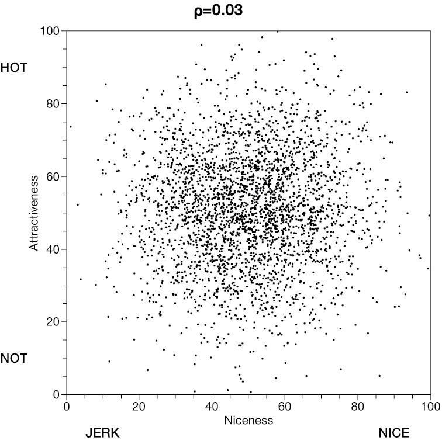 |
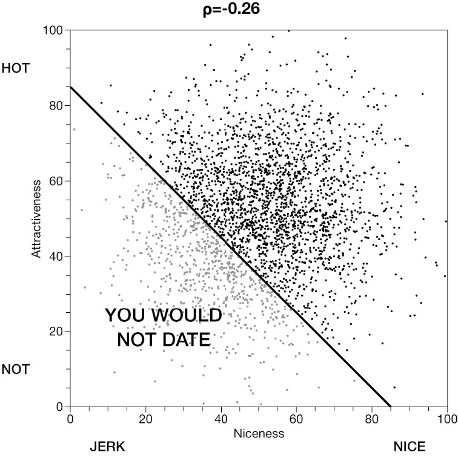 |
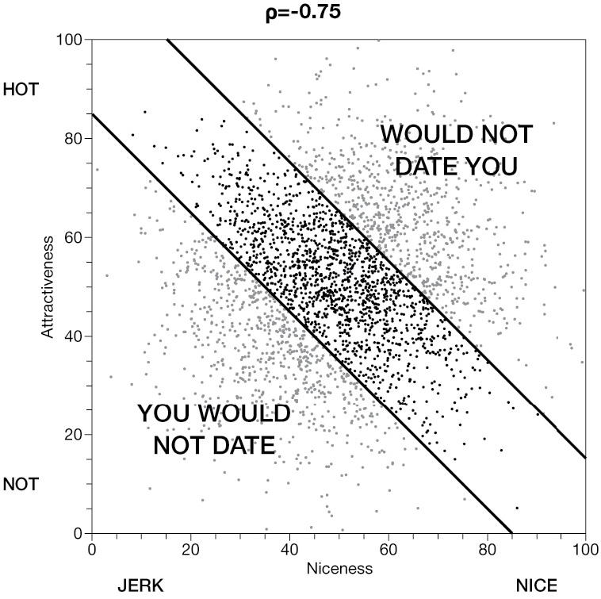 |
The underlying traits begin nearly unrelated. Selection makes them look strongly negatively related.
Source: Bergstrom and West (2021), Chapter 6.
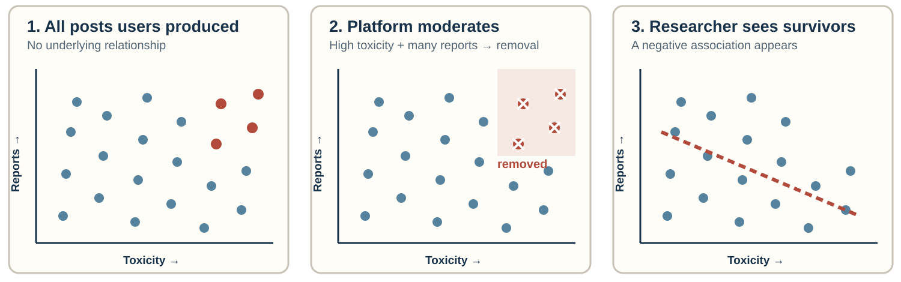
Among visible posts, highly toxic posts must have relatively few reports—and widely reported posts must be relatively nontoxic—to have survived.
Suppose the outcome is whether a story contains a violence frame.
You search only for stories containing riot, clash, or violent.
The search rule has already selected texts likely to score 1 on the outcome.
Prevalence
The sample cannot show the share of all texts with the outcome.
Variation
Few or no outcome-negative cases remain for comparison.
Association
Relationships with sources, time, or a second concept can shrink, reverse, or become undefined.
| Research question | Tempting sample | Missing comparison |
|---|---|---|
| Why do campaigns go viral? | Viral campaigns | Campaigns that did not go viral |
| What predicts policy adoption? | Adopted policies | Proposals that failed or never advanced |
| How common is misinformation? | Fact-checked claims | Claims never selected for fact-checking |
| Do apologies repair reputations? | Public apologies | Similar controversies without apologies |
An outcome-positive sample can support:
The design must narrow the claim rather than pretending the sample represents prevalence.
One wire-service story appears at 24 local outlets.
You draw a random sample of 100 URLs. Of those URLs:
Should the wire story count once or 24 times? What would each choice make one observation represent?
Unit: a story as published by an outlet
Supports claims about available coverage or exposure opportunities.
Unit: a distinct story or editorial production
Supports claims about unique accounts or content production.
Neither rule is automatically correct. Each changes the population and the weight given to syndicated content.
| Decision | Pattern it can create |
|---|---|
| Sample one event week | |
| Stop after 300 results | |
| Use only currently accessible URLs | |
| Collect from a live platform API |
| Decision | Pattern it can create |
|---|---|
| Sample one event week | Event-specific language looks typical |
| Stop after 300 results | Early or highly ranked texts dominate |
| Use only currently accessible URLs | Deleted and paywalled texts disappear |
| Collect from a live platform API | Platform and API rules define visibility |
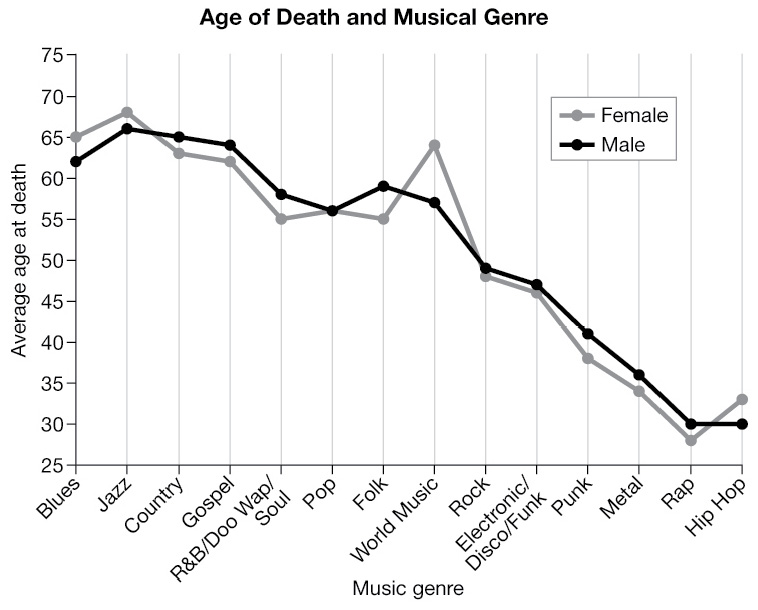
Source: Bergstrom and West (2021), Chapter 6.
Hip-hop is a newer genre. Many artists who will eventually die at 70, 80, or 90 are still alive and therefore absent from a dataset of completed lifetimes.
Text-project RQ: Are episodically framed stories associated with greater engagement?
Data collected on December 1:
| Story | Frame | Total shares | Time available to accumulate shares |
|---|---|---|---|
| Published September 1 | Thematic | 2,000 | 91 days |
| Published November 15 | Episodic | 900 | 16 days |
Total engagement is not comparable when texts have unequal time at risk. Measure the same window, such as shares in the first seven days.
Known selection chances support population estimates and uncertainty calculations.
Information-rich cases support concept refinement, typology building, and difficult coding tests.
Probability sampling makes the estimate correct on average. Larger random samples vary less. Neither fixes a population missing from the frame.
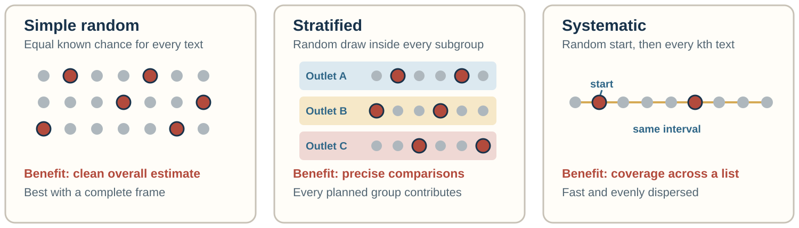
For most class projects: stratify only on comparisons named in the research question.
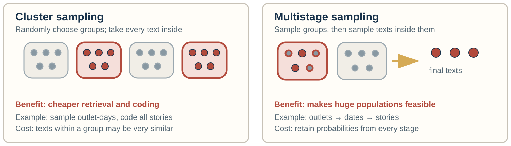
Sampling three convenient events and every article about them is clustered—but not probability sampling.
| Primary goal | Best starting design | Why |
|---|---|---|
| Estimate overall prevalence | Simple random | Mirrors the complete frame without deliberately changing its composition |
| Compare outlets, genres, or periods | Stratified | Guarantees usable samples from every planned comparison group |
| Spread cases across an ordered list | Systematic | Produces dispersed coverage with a random start |
| Reduce retrieval costs | Cluster | Concentrates work in selected outlet-days, events, or threads |
| Make a huge population feasible | Multistage | Builds and samples the frame in documented stages |
There is no universally best design. Match the design to the claim and the practical constraint.
Most project corpora come from an API, a keyword search, or a platform archive. You can still:
A convenience corpus with a documented selection process supports a narrower but honest claim.
\(n_0 = \dfrac{1.96^2p(1-p)}{E^2}\)
Code about texts
No \(N\) is required. If \(p\) is unknown, use .50 for the largest, safest sample.
\(n = \dfrac{N n_0}{N+n_0-1}\)
Code about texts
Sampling without replacement from a complete frame reduces the required \(n\).
Each subgroup needs its own \(n\); clustering and coding error require more than these simple-random-sample formulas imply.
Random pilot batch → code, compare, revise rules → freeze codebook → fresh random batch → independent coding → reliability
Reliability measured on hand-picked texts, or on the texts used to tune the rules, overstates how well the codebook will work on your sample.
Part 3 of 4
A good sample supports a claim about its frame. When can that claim reach further—to other outlets, periods, platforms, or people?
To what population, setting, treatment, outcome, and time does this inference apply?
Findley, Kikuta, and Denly treat external validity as a property of an inference, not a badge attached to a method.
The preceding studies did not all have weak evidence. Their evidence answered narrower questions than the claims people wanted to make.
| Question | What must be specified? | Coding-project example |
|---|---|---|
| Measurement estimand | What feature is measured, on which unit, and how it is summarized | Proportion of articles with at least one conflict frame |
| External-validity estimand | For which population, setting, and time that quantity is wanted | That proportion across all eligible local-newspaper articles during the semester |
Measurement defines the quantity. External validity defines its intended scope.
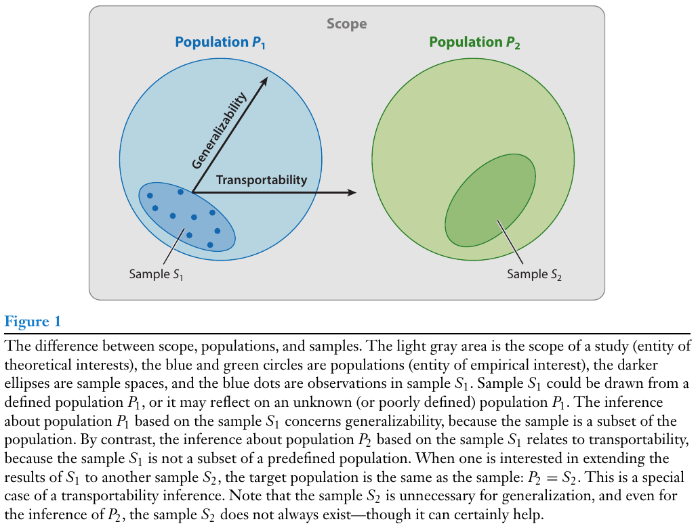
Source: Findley, Kikuta, and Denly (2021), Figure 1.
| Descriptive study | Causal study |
|---|---|
| Does the observed pattern represent the target population? | Would the intervention have a similar effect in the target population? |
| Main concern: who or what enters the corpus | Main concern: whether effects vary across people, places, or implementations |
| Example: prevalence of a conflict frame | Example: effect of a conflict frame on sharing |
Representativeness matters differently for describing a population and transporting an effect.
A modifier is a characteristic that changes the pattern or effect being estimated.
Overlap asks whether the sample contains cases comparable to those in the target.
Reweighting can rebalance observed groups. It cannot invent evidence for target cases absent from the sample.
Henrich, Heine, and Norenzayan reviewed the populations behind claims about human psychology.
The most studied population was often treated as the default human population.
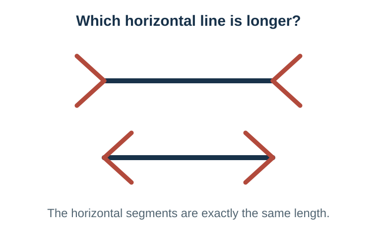
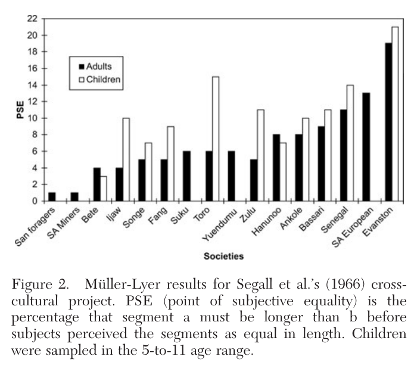
American adults and children showed the strongest illusion. For San foragers, the measured effect was statistically indistinguishable from zero.
Source: Henrich, Heine, and Norenzayan (2010), Figure 2.
| Study task | Common WEIRD result | Comparative evidence |
|---|---|---|
| Ultimatum game | High offers and strong punishment of unfair offers | Offers varied widely; market integration and community size predicted behavior |
| Folk-biological reasoning | Urban children treated humans as the default animal | Menominee and Maya children with ecological experience did not |
| Spatial reasoning | Locations described relative to the body: left and right | Some language communities relied on absolute directions such as north and south |
| Visual attention | Greater focus on a focal object | East Asian samples attended more to relationships and background context |
WEIRD participants were frequently not near the global average—they sometimes occupied an extreme.
Source: Henrich, Heine, and Norenzayan (2010).
Mechanisms Settings Treatments Outcomes Units Time
An inference travels when the relevant process remains comparable across these dimensions.
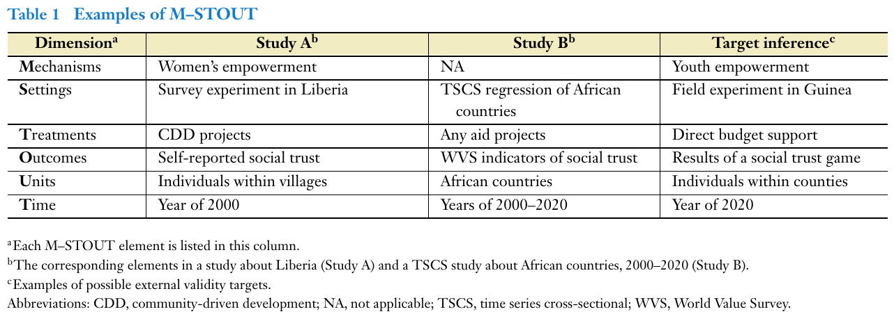
Source: Findley, Kikuta, and Denly (2021), Table 1.
Findley’s example: Does an aid program increase social trust outside the original study?
| Dimension | Study A: Liberia | Target inference: Guinea |
|---|---|---|
| Mechanism | Aid works through women’s empowerment | Aid works through youth empowerment |
| Treatment | Community-driven development projects | Direct budget support |
| Outcome | Self-reported social trust | Results of a social-trust game |
The outcome is the same construct measured differently. The mechanism is the causal pathway—and here the pathway changes.
Source: Findley, Kikuta, and Denly (2021), Table 1 and pp. 372–373.
| Threat | What changes outside the study? | Example |
|---|---|---|
| Interference | One unit’s treatment changes another unit’s outcome | Fact-checking one post changes what others share |
| Scale and equilibrium | Widespread adoption changes the environment | A rare alert attracts attention; alerts everywhere are ignored |
A representative sample cannot rescue a treatment or social system that changes at the target.
| Dimension | What may differ? | Examples |
|---|---|---|
| Settings | Institutional, platform, or social environment | National newspaper versus campus outlet; database archive versus live feed |
| Units | People, texts, outlets, places | National outlets versus local outlets; original posts versus reposts; English-language versus multilingual texts |
| Time | Events, institutions, technology | Election month versus ordinary months; before versus after a platform redesign; 2026 language applied to a 2010 archive |
| Case | Most important dimensions | What would strengthen the broader claim? |
|---|---|---|
| Opower | Settings, units, treatment, mechanisms | Later sites and lower-use customers |
| Nudges | Treatments, settings, outcomes, time | Complete archives and routine implementation |
| Newspapers | Time and setting | Dates distributed across the production cycle |
| Units, settings, mechanisms | User benchmarks and evidence beyond the platform |
M-STOUT is useful when it identifies what evidence the broader claim still needs.
External validity is an evidence-backed argument, not a property automatically conferred by a method.
Choose one intended claim and complete:
| Dimension | In the sample | In the target | Why the difference matters |
|---|---|---|---|
| Setting | |||
| Units | |||
| Time |
Part 4 of 4 · Your sampling plan
| Evidence | Defensible claim | Overreach |
|---|---|---|
| Random sample from a frozen frame | Prevalence in that frame | Prevalence in all media |
| Equal sample from each outlet | Outlet comparisons; weighted overall prevalence | Unweighted prevalence across the frame |
| Most-shared posts | Pattern among highly shared posts | What ordinary posts contain |
| Outcome-positive cases | Forms and mechanisms within those cases | How often the outcome occurs |
In a stratified probability sample of articles returned by our frozen query from twelve specified newspapers between September and November 2026, X% contained Concept A. The estimate uses outlet sampling weights. It describes this database frame, not all news or social media.
Freeze the population statement
The claim needs a boundary.
Freeze the retrieval rule
Outcome terms should not define eligibility.
Preserve the frame
Keep IDs, metadata, and exclusion reasons.
Draw the pilot at random
Build the codebook on one random batch; test reliability on a fresh one.
Record selection probabilities
Strata and stages determine weights.
Prestate scope limits
Name the setting, unit, and time boundaries of the claim.
Complete one sentence:
Our planned sample can support a claim about ________, but not yet about ________.
COMM 5220 • Week 9